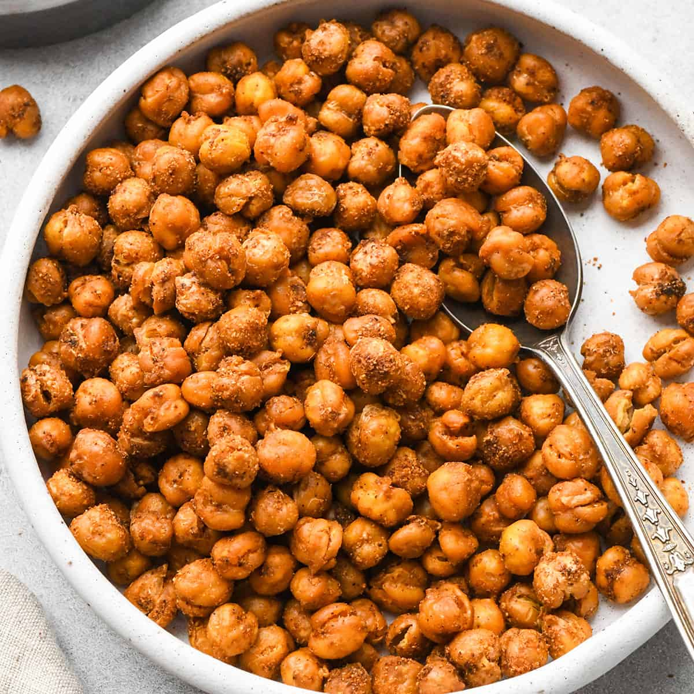

Roasted Chickpeas

Description
Enter: roasted chickpeas. They still have all the protein and heartiness of regular chickpeas, but they’ve become an irresistible salty, crunchy ingredient. Even better, they’re a great healthy vegan snack on their own!
Ingredients
- 1 1/2 cups cooked chickpeas, drained and rinsed
- Extra-virgin olive oil, for drizzling
- Sea salt
- Paprika, curry powder, or other spices (optional)
Steps
- Preheat the oven to 425°F and line a large baking sheet with parchment paper.
- Spread the chickpeas on a kitchen towel and pat them dry. Remove any loose skins.
- Transfer the dried chickpeas to the baking sheet and toss them with a drizzle of olive oil and generous pinches of salt.
- Roast the chickpeas for 20 to 30 minutes, or until golden brown and crisp. Ovens can vary, if your chickpeas are not crispy enough, keep going until they are!
- Remove from the oven and, while the chickpeas are still warm, toss with pinches of your favorite spices, if using.
- Store roasted chickpeas in a loosely-covered container at room temperature. They are best used within two days.